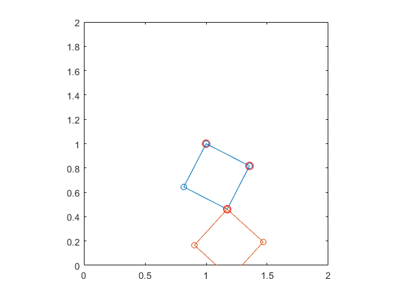
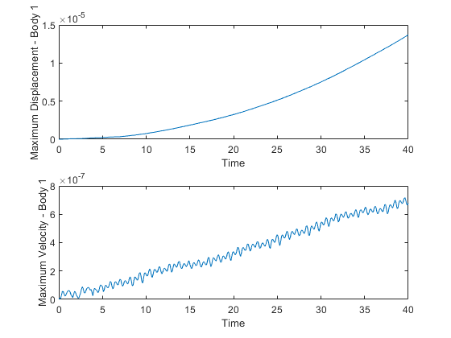

clc
clear all
global m1 m2 J1 J2 g a b
m1 = 1;
m2 = 2;
J1 = 1;
J2 = 2;
g = 10;
a = 0.2;
b = 0.2;
theta1_init = pi/2;
theta2_init = pi/4;
rpin = [1 1]';
Rinit1 = [cos(theta1_init) -sin(theta1_init); sin(theta1_init) cos(theta1_init)];
Rinit2 = [cos(theta2_init) -sin(theta2_init); sin(theta2_init) cos(theta2_init)];
rcg1 = rpin - Rinit1 * [a b]';
rcg2 = rpin - Rinit2 * [a b]';
init = [rcg1(1) rcg1(2) theta1_init rcg2(1) rcg2(2) theta2_init 0 0 0 0 0 0];
tspan = 0:0.1:40;
options = odeset('Reltol', 1e-8, 'AbsTol', 1e-8);
[t, z] = ode15s(@BES, tspan, init, options);
xcg1 = z(:, 1);
ycg1 = z(:, 2);
theta1 = z(:, 3);
xdcg1 = z(:, 7);
ydcg1 = z(:, 8);
thetad1 = z(:, 9);
xcg2 = z(:, 4);
ycg2 = z(:, 5);
theta2 = z(:, 6);
xdcg2 = z(:, 10);
ydcg2 = z(:, 11);
thetad2 = z(:, 12);
figure;
for i = 1:length(t)
rcg1 = [xcg1(i) ycg1(i)]';
R1 = [cos(theta1(i)) -sin(theta1(i)); sin(theta1(i)) cos(theta1(i))];
R2 = [cos(theta2(i)) -sin(theta2(i)); sin(theta2(i)) cos(theta2(i))];
r11 = rcg1 + R1 * [a b]';
r21 = rcg1 + R1 * [-a b]';
r31 = rcg1 + R1 * [-a -b]';
r41 = rcg1 + R1 * [a -b]';
r0P1 = rcg1;
r1P1 = rcg1 + R1 * [a b]';
r1Q1 = rcg1 + R1 * [-a -b]';
r2Q1 = rcg1 + R1 * [a -b]';
rcg2 = rcg1 + R1*[-a -b]' - R2*[a b]';
R2 = [cos(theta2(i)) -sin(theta2(i)); sin(theta2(i)) cos(theta2(i))];
r12 = rcg2 + R2 * [a b]';
r22 = rcg2 + R2 * [-a b]';
r32 = rcg2 + R2 * [-a -b]';
r42 = rcg2 + R2 * [a -b]';
plot([r11(1) r21(1) r31(1) r41(1) r11(1)], [r11(2) r21(2) r31(2) r41(2) r11(2)], 'o-');
hold on;
plot([r12(1) r22(1) r32(1) r42(1) r12(1)], [r12(2) r22(2) r32(2) r42(2) r12(2)], 'o-');
plot(r1P1(1), r1P1(2), 'ro', 'MarkerSize', 8);
plot(r1Q1(1), r1Q1(2), 'ro', 'MarkerSize', 8);
plot(r2Q1(1), r2Q1(2), 'ro', 'MarkerSize', 8);
plot(r1Q1(1), r1Q1(2), 'ro', 'MarkerSize', 8);
plot(r1P1(1), r1P1(2), 'ro', 'MarkerSize', 8);
hold off;
axis equal
xlim([0 2])
ylim([0 2])
pause(0.1)
end
C1 = zeros(1, length(t));
Cd1 = zeros(1, length(t));
for i = 1:1:length(t)
xc1 = 1;
yc1 = 1;
xcd1 = 0;
ycd1 = 0;
rcg1 = [xcg1(i) ycg1(i)]';
vcg1 = [xdcg1(i) ydcg1(i)]';
rc1 = [xc1 yc1]';
rcd1 = [xcd1 ycd1]';
R1 = [cos(theta1(i)) -sin(theta1(i)); sin(theta1(i)) cos(theta1(i))];
Rd1 = thetad1(i) * [-sin(theta1(i)) -cos(theta1(i)); cos(theta1(i)) -sin(theta1(i))];
C1(i) = max(abs(rcg1 + R1 * [a b]' - rc1));
Cd1(i) = max(abs(vcg1 + Rd1 * [a b]' - rcd1));
end
figure;
subplot(2,1,1);
plot(t, C1)
xlabel('Time')
ylabel('Maximum Displacement - Body 1')
subplot(2,1,2);
plot(t, Cd1)
xlabel('Time')
ylabel('Maximum Velocity - Body 1')
 